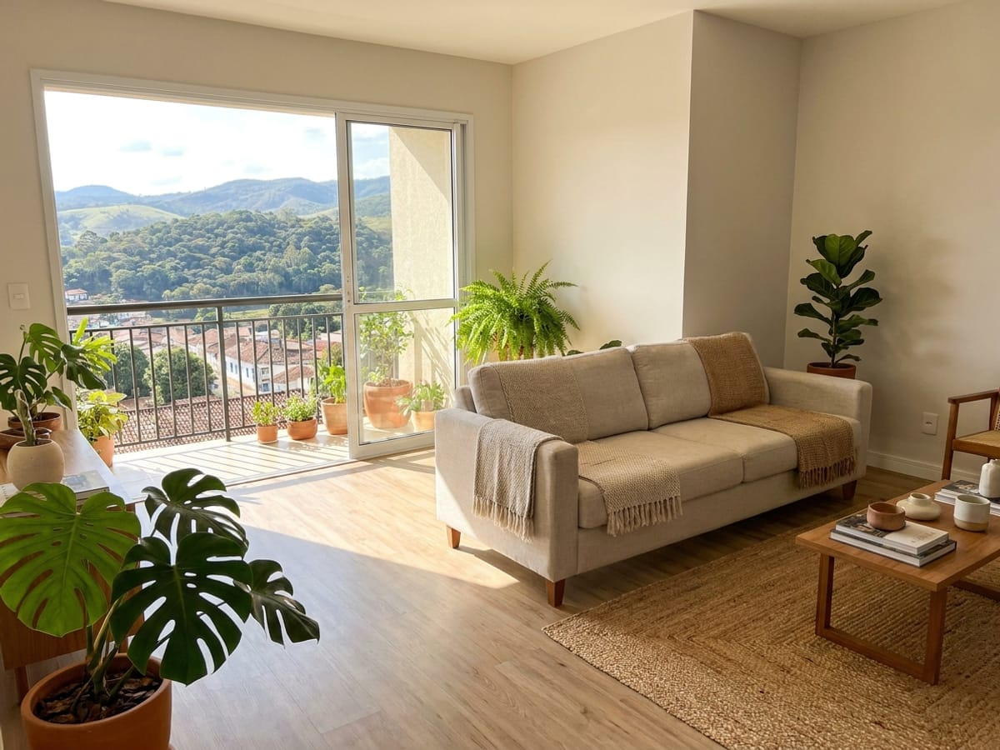
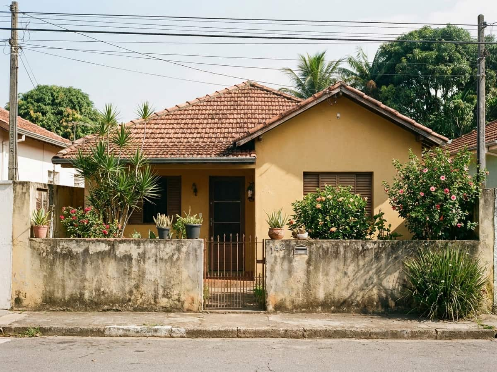

SM-104
Apartamento de 3 quartos com varanda, na Rua Bernardo Mascarenhas
Prédio de 2014, sol da manhã na sala, uma vaga coberta. O condomínio é R$ 480 e inclui água.
R$ 690.000
São Mateus e Bom Pastor. Se o imóvel que você procura está aqui, eu já entrei nele, já sei o barulho da rua às sete da manhã e já sei quanto o condomínio subiu no ano passado.
Nada de formulário que some numa caixa de e-mail. Você filtra, vê o resultado na hora, marca os que gostou — e o botão do WhatsApp já vai com os códigos escritos.
9 imóveis na carteira
Nada bate com esse filtro hoje — e eu prefiro te dizer isso a te empurrar outra coisa. Me diga o que procura que eu aviso quando entrar.
Pelo WhatsApp, em cinco minutos. Faixa de preço real, o que é obrigatório e o que é desejável. Se eu não tiver, eu falo que não tenho.
Eu marco em horário que dê para você, inclusive sábado de manhã. Vou junto em todas — não mando chave e endereço para você se virar.
Proposta, contraproposta, certidões, cartório e financiamento. Você assina duas vezes: a proposta e a escritura.
Corretor com trezentos anúncios não conhece trezentos imóveis — conhece trezentas fotos. Eu prefiro carregar pouco e saber responder qualquer pergunta sobre cada um.

Prédio de 2014, sol da manhã na sala, uma vaga coberta. O condomínio é R$ 480 e inclui água.
R$ 690.000

Rua sem saída, silenciosa. Precisa de pintura e da troca do piso da cozinha — e o preço já considera isso.
R$ 540.000
Eu moro aqui há 22 anos. Não é discurso de venda — é o motivo de eu só trabalhar nestes dois bairros.
Ele me desaconselhou o primeiro apartamento que eu queria. Disse que a infiltração da garagem ia voltar. Voltou — no do vizinho, que comprou.
Marcela A. comprou no São Mateus, 2024
Botei minha casa com três corretores. O Bruno foi o único que apareceu para conhecer antes de anunciar. Vendeu em 41 dias.
Jorge P. vendeu no Bom Pastor, 2025
Respondia no sábado, no domingo, às dez da noite. E quando não sabia, falava que ia descobrir — e descobria.
Fernanda L. alugou no São Mateus, 2025
Comecei em imobiliária grande, em 2011, atendendo a cidade toda. Passava o dia dirigindo e chegava nas visitas sabendo do imóvel o mesmo tanto que o cliente: o que estava no anúncio.
Em 2017 saí e passei a atender só São Mateus e Bom Pastor. Ganho menos comissão por mês e durmo melhor. Trabalho sozinho, com uma assistente para a papelada, e atendo no máximo seis famílias por vez — que é o tanto que eu consigo atender bem.
Bruno
Não. A comissão é paga por quem vende, e é de 6% sobre o valor do negócio, o padrão do CRECI-MG. Você não paga nada para visitar, nem para eu procurar.
Eu te indico um colega que trabalha na região e não fico com nada disso. Prefiro perder a venda a te atender mal num lugar que eu não conheço.
Nos últimos dois anos, a média foi 68 dias no São Mateus e 84 no Bom Pastor — com preço colocado onde eu sugiro. Anúncio acima do mercado passa de seis meses.
Acompanho o processo inteiro na Caixa, no Itaú e no Bradesco. Faço a simulação com você antes de visitar, para não perdermos tempo com imóvel fora do seu limite.
Sábado de manhã, sim, é o horário que mais uso. Domingo só em caso combinado, porque também dependo do morador liberar.
Se for depois das 20h, respondo na manhã seguinte — e aviso que li.
Rua Santa Rita, 480 · São Mateus · Juiz de Fora, MG
Como chegarQuer que eu avise quando entrar algo do seu perfil?
Entrar na lista de avisosAviso só quando tem imóvel do seu perfil. Sem corrente, sem bom dia.